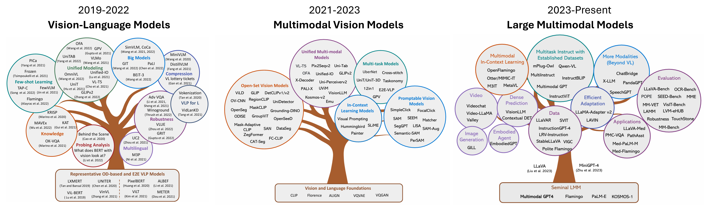

The 4th Workshop on Computer Vision in the Wild
Theme: Building Multimodal AI with both Verbal, Spatial and Temporal Intelligence
Date: June 11 | Location: Music City Center, Nashville TN
Overview
As artificial intelligence continues to evolve, the intersection of vision and language models is becoming increasingly crucial for real-world applications. The 4th Workshop on Computer Vision in the Wild (CVinW) at CVPR 2025 aims to foster discussions and innovations that push the boundaries of computer vision systems in unconstrained environments. Building on the success of our previous workshops: CVPR 2024 CVinW Workshop, CVPR 2023 CVinW Workshop and ECCV 2022 CVinW Workshop, this edition will focus on the next generation of large multimodal models (LMMs) and vision-language-action (VLA) systems, with an emphasis on temporal reasoning, video understanding, and physical interaction.

Image source: Vision-Language Pre-training: Basics, Recent Advances, and Future Trends and Multimodal Foundation Models: From Specialists to General-Purpose Assistants
Over the past years, we have witnessed remarkable advancements in open-vocabulary visual comprehension models and multimodal learning. Five years ago, vision-language models or multimodal models are mostly built on top of the BERT architecture. Typically, these models contain less than 1B parameters, and trained with a small amount of images. Some representative works are like ViLBERT, UNITER, and VisualBERT, etc. They are mostly used for image-text matching tasks such as visual question answering (VQA) and image captioning. Later on, we have seen the emergence of multimodal vision foundation models, such as CLIP, ALIGN and Florence. It scaled up the multimodal training to billions of images. Despite the model size is still relatively small, it shows strong open-vocabulary and zero-shot recognition capability across a wide range of visual domains. These strong capabilities have been further transferred to fine-grained core vision tasks such as object detection (e.g., M-DETR, ViLD, GLIP, RegionCLIP, GroundingDINO, OWL-ViT, etc), image segmentations (e.g., X-Decoder, SegGPT, SEEM, SAM, LISA, etc). Most recently, we entered the era of large multimodal models. Connecting the multimodal vision models such as CLIP with large language models such as Flamingo, Gemini, GPT-4V, leading to many advanced multimodal capability. Now we can have a multimodal chatbot such as GPT-4o, LLaVA-OneVision, Qwen-2.5-VL and Phi-4-Multimodal, which can see, talk and reasoning
Despite these successes, current vision models still lack the ability to fully grasp temporal dynamics, causal reasoning, and embodied interactions—key elements for autonomous agents that can see, reason, and act. Some recent works have attempted to address these challenges by building agentic models and VLA models. Our workshop aims to bringing together leading researchers, practitioners, and industry experts to discuss these emerging trends, challenges, and solutions in the field.
Highlights
(1) Invited Talks from leading experts in academia and industry on the latest advancements in multimodal AI.
(2) Paper Presentations showcasing cutting-edge research contributions in computer vision in the wild.
(3) Panel Discussions (Tentative) exploring the future of vision-language-action models and their impact on robotics, autonomous systems, and real-world AI applications.
We invite researchers, engineers, and enthusiasts to join us in shaping the future of vision systems that go beyond static image recognition to dynamic, interactive, and real-world AI applications. Stay tuned for more details on speakers, paper submissions, and challenge participation!
For more information, visit our official workshop page and explore our CVinW reading list: 📌 CVinW Readings
Invited Speakers

Cordelia Schmid
Inria | Google

Ranjay Krishna
University of Washington

Saining Xie
New York University

Yunzhu Li
Columbia University

Furong Huang
University of Maryland
Schedule (June 11th, Wednesday)
|
|
 |
Welcome
Jianwei Yang - Microsoft Research |
|
|
|
Invited Talk
Boqing Gong Title: BabyVLM: Democratizing Pretraining of Vision Large Language Models Abstract [Expand]
Pretraining vision (large) language models (VLLMs) is prohibitively expensive, making it a privilege for institutions with abundant resources and leaving independent researchers to downstream tasks, such as benchmarking, interpreting, and aligning VLLMs. This situation is a crisis for computer vision research --- “What I cannot create, I do not understand,” quoted Richard Feynman. Independent researchers and the public cannot gain a true understanding, trust, and safe use of VLLMs passively from open weights or APIs. Meanwhile, the few privileged VLLM creators could momentarily reach a plateau without the broad research community’s nurturing. Hence, we propose democratizing VLLM pretraining by scaling it down to a developmentally plausible framework that is scientifically reasonable and computationally friendly to university budgets, aiming to promote exploration rather than exploitation of the pretraining and enable independent researchers to build general-purpose VLLMs that approach “baby intelligence” to benefit efforts towards “grown-up” AI. This framework will closely mimic the minimal yet highly informative sensory experiences of human infants, encompassing: 1. Pretraining data curated from longitudinal, egocentric audiovisual recordings of babies. 2. A suite of developmentally aligned evaluation benchmarks assessing VLLM capabilities against cognitive milestones like object permanence, social skills, and language acquisition. 3. A user-friendly pretraining codebase and baseline models.
Bio [Expand]
Boqing Gong is a computer science faculty member at Boston University and a part-time research scientist at Google DeepMind. His research on machine learning and computer vision focuses on visual recognition, video, and AI models' generalization and efficiency.
|
|
|
Morning Break |
|
|
|
|
Invited Talk
Furong Huang Title: From Perception to Action: World Model Learning for Generalist Agents Abstract [Expand]
This talk explores how to build generalist agents that learn to act by understanding the world—implicitly, symbolically, and through exploration. I will present a sequence of frameworks that progressively expand the capabilities of vision-based decision-makers. TACO and Premier-TACO encode temporal structure into the learning objective, implicitly shaping a latent world model that supports few-shot policy learning. FLARE further advances this idea by aligning predictions with future observations to enable long-horizon reasoning. Shifting perspective, TraceVLA introduces visual traces as symbolic prompts that inject structured spatial-temporal priors into generalist policies. Finally, IVE equips agents with the ability to imagine, verify, and execute—using vision-language models and memory to explore and collect data autonomously. Together, these works trace a path toward foundation models that integrate perception, reasoning, and control in complex environments.
Bio [Expand]
Furong Huang is an Associate Professor of Computer Science at the University of Maryland and a Visiting Research Scholar at Capital One. Her research focuses on trustworthy machine learning, sequential decision-making, and foundation models for perception and control. She has made foundational contributions to world model learning, alignment of generative agents, and robustness in vision-language systems. Dr. Huang’s recent work explores how agents can implicitly or symbolically construct internal models of the world to support generalization, planning, and exploration. Her research has been recognized with multiple best paper awards and supported by DARPA, NSF, ONR, AFOSR, and industry partners.
|
|
|
Benchmark Talks |
|
|
|
|
Invited Talk
Ranjay Krishna Title: Completely Open Foundation models for Vision, Navigation, & Manipulation Abstract [Expand]
What is it going to take to develop completely open-sourced multimodal foundation models? The community's best multimodal language models (GPT, Gemini, Claude, etc) remain proprietary while open-sourced models lag significantly behind. In this talk, I will first introduce Molmo, our completely open multimodal foundation model, which rivaled GPT and outperformed all other models during its release in September 2024. Next, I will delve into open sourced navigation models, trained at scale in simulation. Finally, I will end by describing our work in progress towards developing completely open manipulation VLAs.
Bio [Expand]
Ranjay Krishna is an Assistant Professor at the Paul G. Allen School of Computer Science & Engineering. He co-directs the RAIVN lab at UW and leads the computer vision team at Ai2. His research lies at the intersection of computer vision, natural language processing, robotics, and human computer interaction. Ranjay received his PhD degree in Computer Science from Stanford University.
|
|
|
|
Invited Talk
Yunzhu Li Bio [Expand]
Yunzhu Li is an Assistant Professor of Computer Science at Columbia University. His research research focuses on advancing robust visual intelligence - the creation of scalable and reliable intelligent systems that can interpret visual events, answer questions about them on demand, and develop a common sense understanding of the world. Yunzhu received his PhD degree in Computer Science from MIT.
|
|
|
Spotlight Talks |
|
|
|
|
Invited Talk
Saining Xie Bio [Expand]
Saining Xie is an Assistant Professor of Computer Science at NYU Courant and part of the CILVR group. He focuses on Robot Learning and aim to significantly expand robots' perception and physical interaction capabilities. Saining received his PhD degree in Computer Science from the University of California, San Diego.
|
|
|
Coffee Break and Poster Session |
Poster boards: Room 101 B (#36-#65)
|
|
|
|
Invited Talk
Cordelia Schmid Title: Video reasoning and grounding: methods & benchmarks Bio [Expand]
Cordelia Schmid holds a M.S. degree in Computer Science from the University of Karlsruhe and a Doctorate, also in Computer Science, from the Institut National Polytechnique de Grenoble (INPG). Her doctoral thesis on "Local Greyvalue Invariants for Image Matching and Retrieval" received the best thesis award from INPG in 1996. She received the Habilitation degree in 2001 for her thesis entitled "From Image Matching to Learning Visual Models". Dr. Schmid was a post-doctoral research assistant in the Robotics Research Group of Oxford University in 1996--1997. Since 1997 she has held a permanent research position at Inria, where she is a research director. Dr. Schmid is a member of the German National Academy of Sciences, Leopoldina and a fellow of IEEE and the ELLIS society. She was awarded the Longuet-Higgins prize in 2006, 2014 and 2016, the Koenderink prize in 2018 and the Helmholtz prize in 2023, all for fundamental contributions in computer vision that have withstood the test of time. She received an ERC advanced grant in 2013, the Humboldt research award in 2015, the Inria & French Academy of Science Grand Prix in 2016, the Royal Society Milner award in 2020 and the PAMI distinguished researcher award in 2021. In 2023 she received the Körber European Science Prize and in 2024 the European Inventor Award in the research category. Dr. Schmid has been an Associate Editor for IEEE PAMI (2001--2005) and for IJCV (2004--2012), an editor-in-chief for IJCV (2013--2018), a program chair of IEEE CVPR 2005 and ECCV 2012 as well as a general chair of IEEE CVPR 2015, ECCV 2020 and ICCV 2023. Starting 2018 she holds a joint appointment with Google research.
|
|
|
|
Invited Talk
Shizhe Chen Title: Generalization in Vision-Language Guided Robot Manipulation Abstract [Expand]
Empowering robots to assist in everyday tasks requires a deep understanding of 3D environments, seamless communication with humans, and precise action execution. Yet, existing policies often fall short when faced with novel objects, scenes, or instructions. In this talk, I will share our recent advances in improving robotic perception, reasoning, and acting capabilities. First, I will introduce pretraining 3D vision-language models on synthetic data to enable strong few-shot generalization. Next, I will discuss learning dexterous manipulation skills from human videos. Finally, I will present combining large vision and language models with 3D policies to boost accuracy and generalization.
Bio [Expand]
Shizhe Chen is a research scientist at WILLOW project-team in Inria Paris. She received her bachelor’s and PhD degrees at Renmin University of China in 2015 and 2020 respectively, supervised by Prof. Qin Jin. She then spent two wonderful post-doctoral years at Inria Paris collaborating with Dr. Ivan Laptev and Dr. Cordelia Schmid. Shizhe’s primary interests lie in embodied AI, vision and language, and multimodal deep learning. She has published over 40 peer-reviewed papers in leading conferences in computer vision, machine learning and robotics such as CVPR, ICCV, ECCV, NeurIPS, ICLR, ACM MM, CoRL, ICRA and IROS. She also served as area chairs in CVPR, ICCV, ECCV, ACM MM, NeurIPS, ICML and ICLR.
|
Spotlight Papers
-
The following papers are accepted as spotlights to the CVinW Workshop. Congratulations to all authors!
- Two by Two: Learning Multi-Task Pairwise Objects Assembly for Generalizable Robot Manipulation
- Vision-Language Models Are Not Pragmatically Competent in Referring Expression Generation
- FLARE: Robot Learning with Implicit World Modeling
- LEMON: A Unified and Scalable 3D Multimodal Model for Universal Spatial Understanding
- PhyWorldBench: A Comprehensive Evaluation of Physical Realism in Text-to-Video Models
- BLIP3-O: A Family of Fully Open Unified Multimodal Models—Architecture, Training and Dataset
- Struct2D: A Perception-Guided Framework for Spatial Reasoning in Large Multimodal Models
Accepted Papers
-
The following papers are accepted to the CVinW Workshop. Congratulations to all authors!
- Few-Shot Recognition via Stage-Wise Retrieval-Augmented Finetuning Tian Liu, Huixin Zhang, Shubham Parashar, Shu Kong
- SAM2-Adapter: Evaluating & Adapting Segment Anything 2 in Downstream Tasks: Camouflage, Shadow, Medical Image Segmentation, and More Tianrun Chen, Ankang Lu, Lanyun Zhu, Chaotao Ding, Chunan Yu, Deyi Ji, Zejian Li, Lingyun Sun, Papa Mao, Ying Zang
- TAB: Transformer Attention Bottlenecks enable User Intervention and Debugging in Vision-Language Models Pooyan Rahmanzadehgervi, Hung Nguyen, Rosanne Liu, Long Mai, Anh Totti Nguyen
- Improved Convex Decomposition with Ensembling and Boolean Primitives Vaibhav Vavilala, Seemandhar Jain, Florian Kluger, Bodo Rosenhahn, David Forsyth, Anand Bhattad
- Two by Two: Learning Multi-Task Pairwise Objects Assembly for Generalizable Robot Manipulation Yu Qi, Yuanchen Ju, Tianming Wei, Chi Chu, Lawson L.S. Wong, Huazhe Xu
- RELOCATE: A Simple Training-Free Baseline for Visual Query Localization Using Region-Based Representations Savya Khosla, Sethuraman T V, Alex Schwing, Derek Hoiem
- CAG‐VLM : Fine tuning of a large-scale model to recognize angiographic images for next-generation diagnostic systems Yuto Nakamura, Satoshi Kodera, Haruki Settai, Hiroki Shinohara, Masatsugu Tamura, Tomohiro Noguchi, Tatsuki Furusawa, Ryo Takizawa, Tempei Kabayama, NORIHIKO TAKEDA
- Vision-Language Models Are Not Pragmatically Competent in Referring Expression Generation Ziqiao Ma, Jing Ding, Xuejun Zhang, Dezhi Luo, Jiahe Ding, Sihan Xu, Yuchen Huang, Run Peng, Joyce Chai
- On the Limitations of Vision Language Models in Understanding Image Transforms Ahmad Mustafa Anis, M. Saquib Sarfraz, Hasnain Ali Arain
- Deployable Vision AI: Domain-Aware Self-Consistency for Real-World Applications Mihir Gupta, Abhay Mangla, Pratik Desai, Ross Greer
- Uncertainty Modeling in Autonomous Vehicle Trajectory Prediction: A Comprehensive Survey Siddharth Raina, Jeshwanth Challagundla, Mantek Singh
- FLARE: Robot Learning with Implicit World Modeling Ruijie Zheng, Jing Wang, Scott Reed, Johan Bjorck, Yu Fang, Fengyuan Hu, Joel Jang, Kaushil Kundalia, Zongyu Lin, Loïc Magne, Avnish Narayan, You Liang Tan, Guanzhi Wang, Qi Wang, Jiannan Xiang, Yinzhe Xu, Seonghyeon Ye, Jan Kautz, Furong Huang, Yuke Zhu, Linxi Fan
- Conditioned Image-to-Image Retrieval via Concept-based Visual Projections in Vision-Language Model Sohwi Lim, Lee Hyoseok, Tae-Hyun Oh
- Gen4D: Synthesizing Humans and Scenes in the Wild Jerrin Bright, Zhibo Wang, Yuhao Chen, Sirisha Rambhatla, David A. Clausi, John S. Zelek
- Hallucinate, Ground, Repeat: A Framework for Generalized Visual Relationship Detection Shanmukha Vellamcheti, Sanjoy Kundu, Sathyanarayanan N. Aakur
- COMPACT: COMPositional Atomic-to-Complex Visual Capability Tuning Xindi Wu, Hee Seung Hwang, Polina Kirichenko, Olga Russakovsky
- LEMON: A Unified and Scalable 3D Multimodal Model for Universal Spatial Understanding Yongyuan Liang, Xiyao Wang, Yuanchen Ju, Jianwei Yang, Furong Huang
- Prmpt2Adpt: Prompt-Based Zero-Shot Domain Adaptation for Resource-Constrained Environments Yasir Ali Farrukh, Syed Wali, Irfan Khan, Nathaniel D. Bastian
- Direct Preference Optimization with LLM-as-Judge for Training Computer Use Agents Man Luo, David Cobbley, Xin Su, Shachar Rosenman, Vasudev Lal, Shao-Yen Tseng, Phillip Howard
- FRAMES-VQA: Benchmarking Fine-Tuning Robustness across Multi-Modal Shifts in Visual Question Answering Chengyue Huang, Brisa Maneechotesuwan, Shivang Chopra, Zsolt Kira
- Struct2D: A Perception-Guided Framework for Spatial Reasoning in Large Multimodal Models Fangrui Zhu, Hanhui Wang, Yiming Xie, Jing Gu, Tianye Ding, Jianwei Yang, Huaizu Jiang
- PhyWorldBench: A Comprehensive Evaluation of Physical Realism in Text-to-Video Models Jing Gu, Xian Liu, Yu Zeng, Ashwin Nagarajan, Fangrui Zhu, Daniel Hong, Yue Fan, Qianqi Yan, Kaiwen Zhou, Ming-Yu Liu, Xin Eric Wang
- Open World Scene Graph Generation using Vision Language Models Amartya Dutta, Kazi Sajeed Mehrab, Medha Sawhney, Abhilash Neog, Mridul Khurana, Sepideh Fatemi, Aanish Pradhan, M. Maruf, Ismini Lourentzou, Arka Daw, Anuj Karpatne
- BLIP3-O: A Family of Fully Open Unified Multimodal Models—Architecture, Training and Dataset Jiuhai Chen, Zhiyang Xu, Xichen Pan, Yushi Hu, Can Qin, Tom Goldstein, Lifu Huang, Tianyi Zhou, Saining Xie, silvio savarese, Le Xue, Caiming Xiong, Ran Xu
Call for Papers
We welcome original contributions that advance the state of the art in vision-language learning, multimodal perception, and embodied AI, particularly in unconstrained, real-world environments. Topics of interest include, but are not limited to:
- LMMs & Vision-Language Systems: Open-vocabulary learning, multimodal pretraining, and adaptation.
- Video Understanding & Temporal Reasoning: Long-range video modeling, causal reasoning, and instruction-following.
- VLA & Embodied AI: Multimodal action learning, simulation-to-real transfer, and robotic perception.
- Foundation Models for Vision Tasks: Object detection, segmentation, tracking, and fine-grained recognition in the wild.
- Efficient Training Methods: Large visual model adaptation methods, measured by #training samples (zero-shot and few-shot), #trainable parameters, throughput, training cost
- New Metrics and Benchmarks: Novel ways to evaluate existing LMMs and large vision models for task-level transfer and open-set visual recognition.
We accept abstract submissions to our workshop. All submissions shall have maximally 8 pages (excluding references) following the CVPR 2025 author guidelines. All submissions will be reviewed by the Program Committee on the basis of technical quality, relevance to scope of the conference, originality, significance, and clarity. Ther review process is double-blind, and the accepted papers are NOT archived in CVPR 2025 Proceeding.
Workshop Paper Submission Portal:
[Open Review]

Submission Deadline:
May 16th, 2025
Acceptance Notification:
May 23rd, 2025
Camera-ready Submission
May 30th, 2025
Call for Challenge Submissions
We introduce two new challenges to evaluate the performance of large vision models in the wild:
|
|
|
|
|
|
|
|
|
|
|
|
|
|
|
|
|
|
June 1st, 2025
Competition ends
June 6th, 2025
Invitation to present at workshop
Workshop Organizers
Jianwei Yang
Microsoft

Chunyuan Li
xAI

Jiasen Lu
Apple
Reuben Tan
Microsoft

Qianhui Wu
Microsoft
Baolin Peng
Microsoft

Jianfeng Gao
Microsoft
Challenge Organizers


Program Committee
Xueyan Zou (UC San Diego)
Tianhe Ren (IDEA)
Yongyuan Liang (UMD)
Fangrui Zhu (NEU)
Jin Gu (UCSC)
Jiasen Lu (Apple)
Yanbei Chen (Amazon)
Sangho Lee (AI2)
Zhuoran Yu (UW Madison)
Jianrui Zhang (UW Madison)
Jianwei Yang (Microsoft)
Feng Li (HKUST)
Mu Cai (UW Madison)
Xuehai He (USCD)
Ruijie Zheng (UMD)
Hao Zhang (NVDIA)
Zhengyuan Yang (Microsoft)
Hanhui Wang (USC)
Junyeong Kim (CHUNG-ANG Univ.)
Piotr Teterwak (BU)
Nannan Li (BU)
Wenqi Wang (BU)
Mihir Gupta (harker.org)
Jerrin Bright (uwaterloo)
Prasanth Murali (Meta)
Reuben Tan (Microsoft)
Mahir Patel (BU)
Amartya Dutta (VT)
Qianhui Wu (Microsoft)
Yiwu Zhong (CUHK)
Yixin Wan (UCLA)
Question? Reach out Workshop Organizing Team